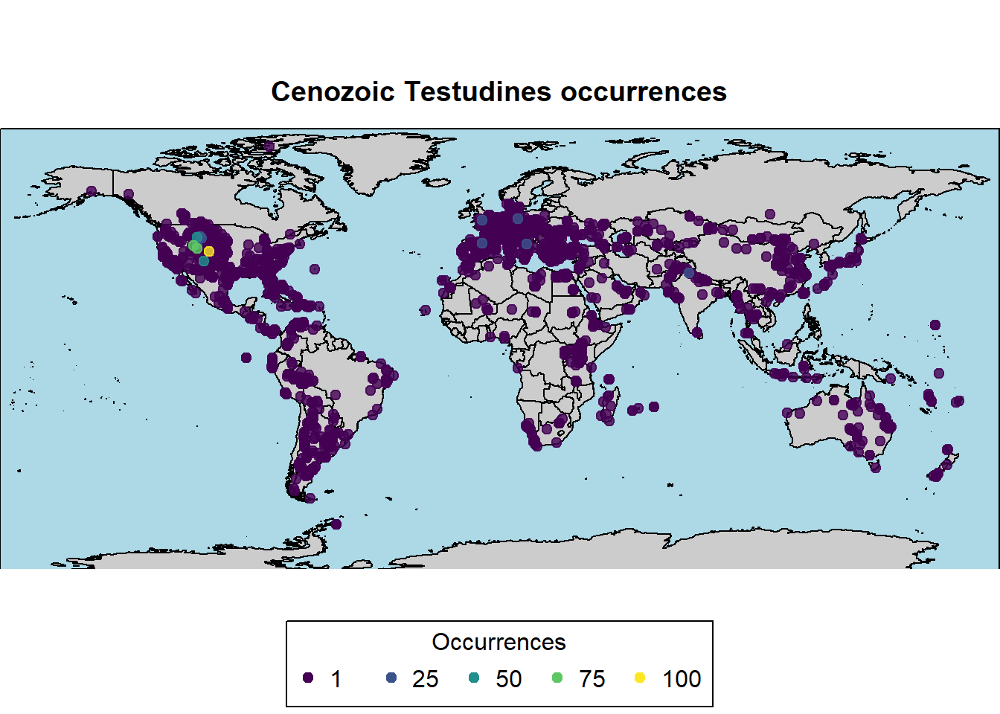
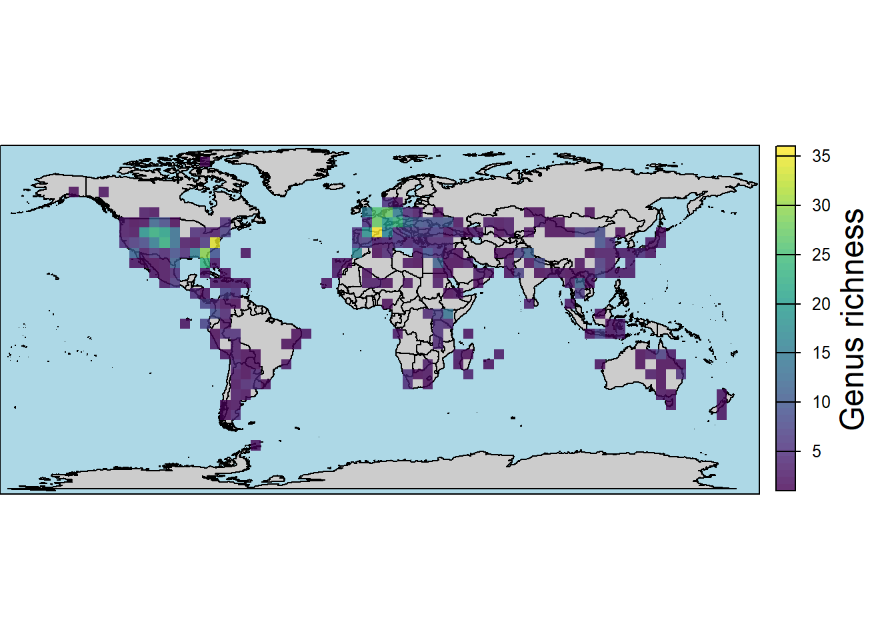
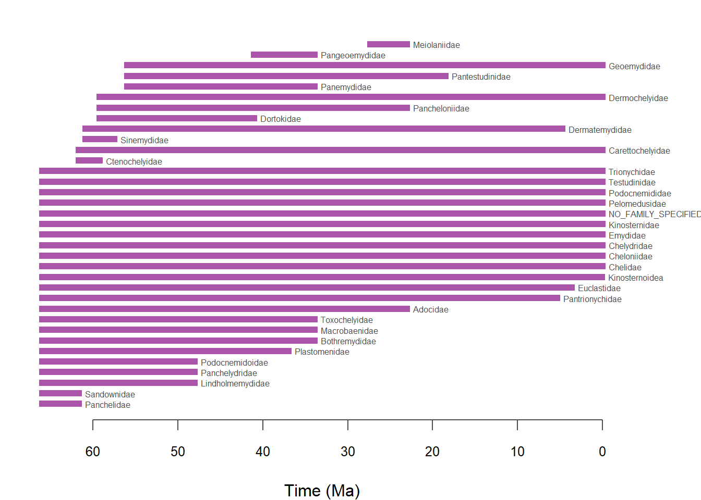
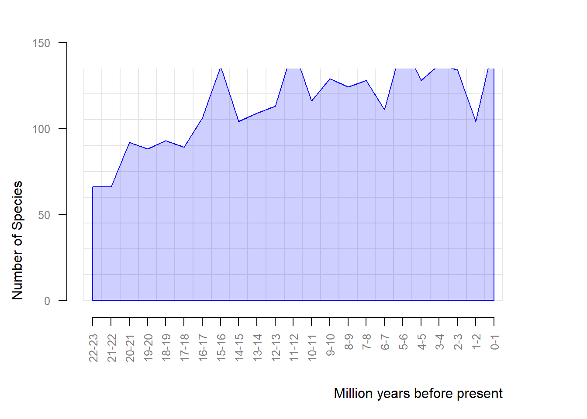
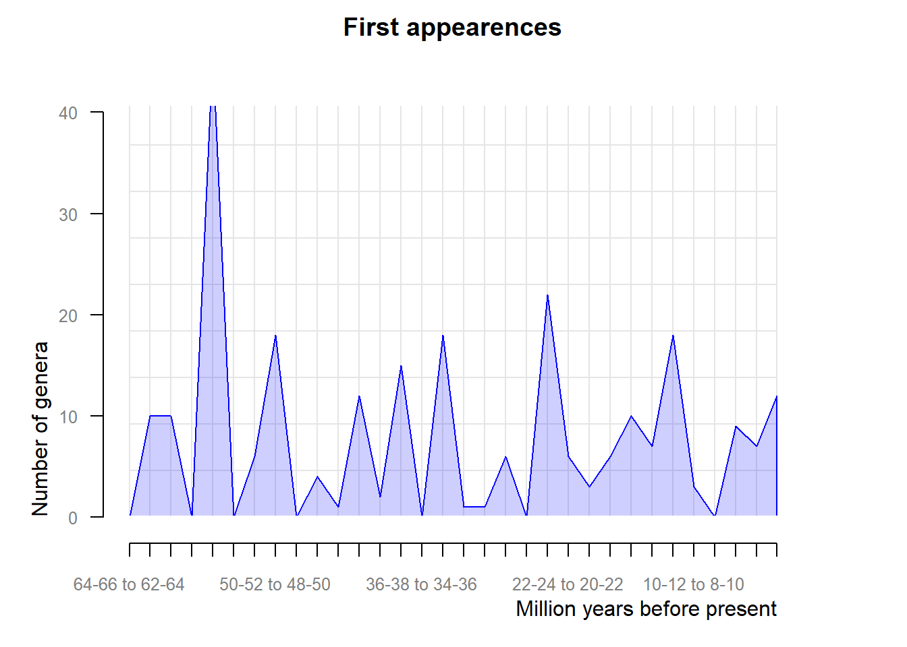
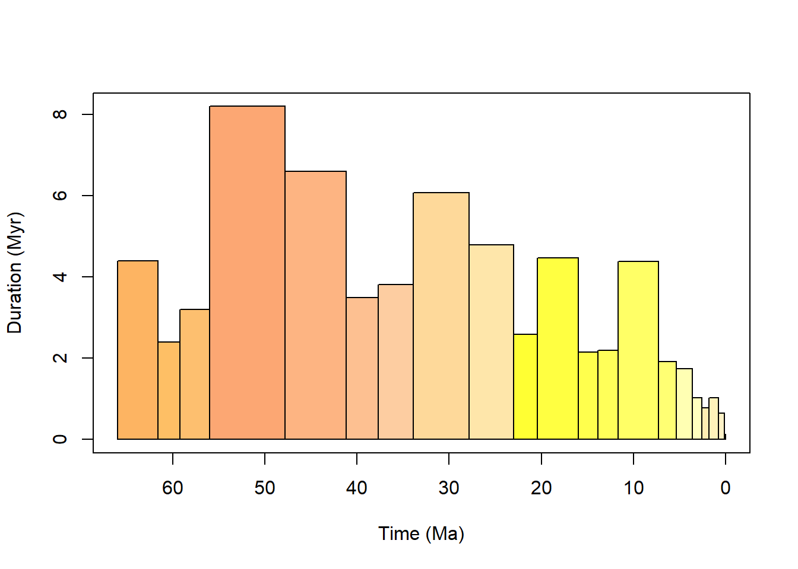
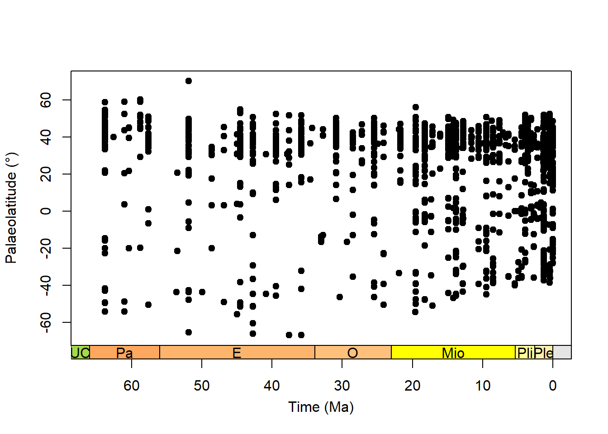

testudines <- pbdb_occurrences(base_name = "Testudines",
interval = "Cenozoic",
show = c("coords", "classext", "paleoloc"),
limit = "all",
vocab = "pbdb") ## vocab makes better namesOccurrence data from PaleoBioDB
In the previous topic, we learned that it is possible to plot points on a map providing their coordinates as arguments in the points() function. However, plotting point-by-point would be meaningless when dealing with larger datasets and compiling their coordinates (or paleocoordinates) can be very time-consuming. Luckily, such data has, in many cases, been compiled by other researchers and, sometimes, made available in larger online repositories. Examples of those repositories are the Global Biodiversity Information Facility or GBIF for data on biodiversity and the Paleobiology Database or PaleoBioDB, specifically for occurrences of fossils. In this page, we will focus on the latter, exploring the R package paleobioDB to learn how to download and work with occurrence data of fossils using R.
In order to download occurrence data from PaleoBioDB, we will use the function pbdb_occurrences(). This function allows us to specify various parameters to filter the data we want to download, such as taxonomic group, time interval, geographic location, and more, and also to select which data to download. Let’s download a dataset composed of Cenozoic Testudines (turtles) occurrences:
dim(testudines)[1] 5911 35This dataset is composed of 5911 occurrences and it has 35 columns, with different types of information about each occurrence. The paleobioDB package includes a function for mapping the occurrences directly, called pbdb_map(). This function includes arguments for changing the mainland and ocean colors (col_int and col_ocean, respectively), and another (col_point) for changing the color gradient for the occurrences. Let’s explore this function and its arguments to plot the occurrences we just downloaded:
# basic plot
pbdb_map(data = testudines,
main = "Cenozoic Testudines occurrences")
# changing colors
pbdb_map(data = testudines,
main = "Cenozoic Testudines occurrences",
col_int = "grey80",
col_ocean = "lightblue",
col_point = c("lightyellow", "yellow", "orange", "red"),
cex = 0.8)
# using the color pallette from the package "viridisLite"
pbdb_map(data = testudines,
main = "Cenozoic Testudines occurrences",
col_int = "grey80",
col_ocean = "lightblue",
col_point = viridis(5))
Instead of plotting single points for each occurrence, it is also possible to create richness maps, which can be useful to visualize areas with higher or lower taxonomic richness. To do so, we can use the function pbdb_map_richness, in which we need to select which taxonomic rank (e.g., species, genus, family, etc.) we want to consider. Let’s see how this works using different taxonomic ranks and color palettes:
# by species
map.rich <- pbdb_map_richness(data = testudines,
rank = "species",
res = 5,
col_int = "grey80",
col_ocean = "lightblue",
col_rich = heat.colors(10),
title = "Species richness")
# by genera
map.rich <- pbdb_map_richness(data = testudines,
rank = "genus",
res = 5,
col_int = "grey80",
col_ocean = "lightblue",
col_rich = viridis(10),
title = "Genus richness")
# by family
map.rich <- pbdb_map_richness(data = testudines,
rank = "family",
res = 5,
col_int = "grey80",
col_ocean = "lightblue",
col_rich = map.pal("inferno",10),
title = "Family richness")
This page provided a brief overview of how to download and plot occurrence data from the Paleobiology Database using R. The paleobioDB package offers many more functions and options for working with paleontological data, so I encourage you to explore its documentation for further details and possibilities. Let’s take a look at some additional resources from the package.
# Temporal range of taxa
temp.range <- pbdb_temp_range(testudines,
rank = "family",
col = "#AA55AA") ## select color
# Richness through time
rich <- pbdb_richness(testudines,
rank = "species",
ylab = "Number of Species",
temporal_extent = c(0, 23)) ## define temporal extent
# change color the resolution, default = 1
rich <- pbdb_richness(testudines,
rank = "genus", ## change rank
ylab = "Number of Species",
temporal_extent = c(0, 23),
res = 0.5, ## looks more detailed
col = "#A0A00F30",
bord = "#A0A00F") 
# Patterns of origination and extinction
origination <- pbdb_orig_ext(testudines,
rank = "genus",
temporal_extent = c(0, 66),
orig_ext = 1, ## this argument defines whether origination
res = 2)
extinction <- pbdb_orig_ext(testudines,
rank = "genus",
temporal_extent = c(0, 66),
orig_ext = 2, ## or extinction
res = 2)
We can further explore the dataset downloaded from the PaleoBioDB with the package palaeoverse. Palaeoverse is an community initiative to share open-source tools for paleontological data analysis and visualization in R. It includes different packages, but here we are exploring only palaeoverse, which provides functions to prepare and explore paleontological data. Let’s see how we can use some of its functions to explore the testudines dataset:
cenozoic.bins <- time_bins(interval = "Cenozoic",
plot = TRUE)
The package includes another useful function called bin_time which can be used to assign occurrences to time bins. This can be particularly useful for analyzing temporal patterns in the data using a common time framework. With this information, we can then run the function tax_range_time() to plot temporal ranges using our dataset.
family_range <- tax_range_time(subset(testudines, !is.na(family)),
name = "family",
plot = TRUE,
plot_args = list(ylab = "Families",
pch = 15,
col = "grey30",
lty = 2))
palaeorotate() is a function included in the palaeoverse package that allows us to calculate paleocoordinates for fossil occurrences based on their present-day coordinates and age. This can be particularly useful for ploting past distributions on paleogeographic maps. Let’s see how we can use this function with our testudines dataset, but before we proceed we need to assign the occurrences to a common framework of time bins, which can be done using the function bin_time(). Then we can use the look_up() function to convert the interval values derived from the PaleoBioDB into official numeric ages based on the intervals of the International Comission on Stratigraphy (ICS). This is useful for standardizing data from different sources. After this we can finally plot those occurrences per time bin and per paleocoordinates.
# assing occurrences to time bins
testudines.binned <- bin_time(occdf = testudines,
bins = cenozoic.bins,
method = "majority")
# calculate paleocoordinates
testudines.palaeocoord <- palaeorotate(testudines.binned,
age = "bin_midpoint") ## using the midpoint of their range
# convert to ICS intervals
testudines.palaeocoord <- look_up(testudines.palaeocoord,
early_interval = "early_interval",
late_interval = "late_interval",
int_key = interval_key)
# plot occurrences per time bin and per paleocoordinates
plot(x = testudines.palaeocoord$interval_mid_ma,
y = testudines.palaeocoord$p_lat,
xlab = "Time (Ma)",
ylab = "Palaeolatitude (\u00B0)",
xlim = c(66, 0),
xaxt = "n",
pch = 20,
cex = 1.5)
# and we can add a geological time scale to the plot
axis_geo(side = 1,
intervals = "epoch")